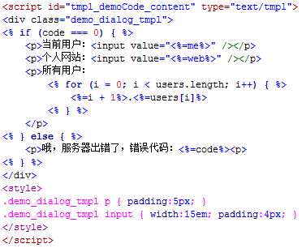

文档
应用到你的项目
在页面head引入artDialog，注意如果文件带有skin参数将会无阻塞的方式自动加载对应的皮肤css文件，当然你仍然可以使用传统方式引用“skins/”目录下的css文件，二者选其一。
<script src="artDialog.js?skin=default"></script>如果项目采用jQuery作为框架，则引用jQuery artDialog版本：
<script src="jquery.artDialog.js?skin=default"></script>如果需要在iframe应用下提供 更好的支持 ，需要加上：
<script src="artDialog.iframeTools.js"></script>配置参数
| 名称 | 类型 | 默认值 | 描述 |
|---|---|---|---|
| title | String | '消息' | 标题内容 |
| content | String | null | 消息内容。 1、如果内容类型是Object还需要tmpl参数配合 2、如果传入的是HTMLElement类型，如果是隐藏元素会给其设置display:block以显示该元素，其他属性与绑定的事件都会完整保留，对话框关闭后此元素又将恢复原来的display属性，并且重新插入原文档所在位置 3、如果没有设定content的值则会有loading的动画 |
| HTMLElement | |||
| Object | |||
| yesFn | Function | null | 确定按钮回调函数。 函数如果返回false将阻止对话框关闭；函数this指针指向内部api；如果传入true表示只显示有关闭功能的按钮 |
| Boolean | |||
| noFn | Function | null | 取消按钮回调函数。 函数如果返回false将阻止对话框关闭；函数this指针指向内部api；如果传入true表示只显示有关闭功能的按钮 对话框标题栏的关闭按钮其实就是取消按钮，只不过视觉不同罢了，点击同样触发noFn事件 |
| Boolean | |||
| yesText | String | '确定' | "确定按钮"文字 |
| noText | String | '取消' | "取消按钮"文字 |
| button | Array | null | 自定义按钮。 配置参数成员： name —— 按钮名称
callback —— 按下后执行的函数
focus —— 是否聚焦点
disabled —— 是否标记按钮为不可用状态（后续可使用控制接口让其恢复可用状态）
示例：
参数如：[{name: '登录', callback: function () {}}, {name: '取消'}] 。注意点击按钮默认会触发按钮关闭动作，需要阻止触发关闭请让回调函数返回false |
| width | Number | 'auto' | 设置消息内容宽度，可以带单位。一般不需要设置此，对话框框架会自己适应内容。 如果设置为百分值单位，将会以根据浏览器可视范围作为基准，此时如果浏览器窗口大小被改变其也会进行相应的调整 |
| String | |||
| height | Number | 'auto' | 设置消息内容高度，可以带单位。不建议设置此，而应该让内容自己撑开高度。 如果设置为百分值单位，将会以根据浏览器可视范围作为基准，此时如果浏览器窗口大小被改变其也会进行相应的调整 |
| String | |||
| fixed | Boolean | false | 开启静止定位。静止定位是css2.1的一个属性，它静止在浏览器某个地方不动，也不受滚动条拖动影响。（artDialog支持IE6 fixed） |
| follow | HTMLElement | null | 让对话框依附在指定元素附近。 可传入元素ID名称，注意ID名称需要以“#”号作为前缀 |
| String | |||
| left | Number | '50%' | X轴的坐标。 1、如果开启了fixed参数则以浏览器视口为基准； 2、可以使用'0%' ~ '100%'作为相对坐标，如果浏览器窗口大小被改变其也会进行相应的调整 |
| String | |||
| top | Number | 'goldenRatio' | Y轴的坐标。 1、如果开启了fixed参数则以浏览器视口为基准； 2、可以使用'0%' ~ '100%'、''goldenRatio''作为相对坐标，如果浏览器窗口大小被改变其也会进行相应的调整，其中'goldenRatio'表示为黄金比例垂直居中，绝对居中请使用'50%' |
| String | |||
| 视觉 | |||
| lock | Boolean | false | 开启锁屏。 中断用户对话框之外的交互，用于显示非常重要的操作/消息，所以不建议频繁使用它 |
| background | String | '#000' | 锁屏遮罩颜色 |
| opacity | Number | 0.7 | 锁屏遮罩透明度 |
| icon | String | null | 定义消息图标。可定义“skins/icons/”目录下的图标名作为参数名（不包含后缀名） |
| padding | String | '20px 25px' | 内容与边界填充边距(即css padding) |
| time | Number | null | 设置对话框显示时间。以秒为单位 |
| resize | Boolean | true | 是否允许用户调节尺寸 |
| drag | Boolean | true | 是否允许用户拖动位置 |
| esc | Boolean | true | 是否允许用户按Esc键关闭对话框 |
| id | String | null | 设定对话框唯一标识。用途： 1、防止重复弹出 2、可后续使用art.dialog.list[youID]获取控制接口 |
| Number | |||
| tmpl | String | null | 启用模板引擎拼接消息内容，还需要与content参数传入字面量对象才能生效，详情见示例 |
| zIndex | Number | 1987 | 重置全局zIndex初始值。 用来改变对话框叠加高度。比如有时候配合外部浮动层UI组件，但是它们可能默认zIndex没有artDialog高，导致无法浮动到artDialog之上，这个时候你就可以给对话框指定一个较小的zIndex值。 请注意这是一个会影响到全局的配置，后续出现的对话框叠加高度将重新按此累加。 |
| initFn | Function | null | 对话框弹出后执行的函数 |
| closeFn | Function | null | 对话框关闭前执行的函数。函数如果返回false将阻止对话框关闭。 请注意这不是关闭按钮的回调函数，无论何种方式关闭对话框，closeFn都将执行。 |
| show | Boolean | true | 是否显示对话框 |
配置全局默认设置:
(function (config) {
config['lock'] = true;
config['fixed'] = true;
config['yesText'] = 'yes';
config['noText'] = 'no';
// [more..]
})(art.dialog.defaults);
配置参数范例
内容 [content]
1. 传入字符串
art.dialog({
content: '我支持HTML'
});2. 传入HTMLElement
备注：1、元素不是复制而是完整移动到对话框中，所以原有的事件与属性都将会保留 2、如果隐藏元素被传入到对话框，会设置display:block属性显示该元素 3、对话框关闭的时候元素将恢复到原来在页面的位置，style display属性也将恢复
art.dialog({
content: document.getElementById('demoCode_content_DOM'),
id: 'EF893L'
});3. 高级应用：传入Object并使用“tmpl”模板参数生成内容
备注：拼接字符串是一个比较无趣的活儿，而artDialog内部使用一个微型模板引擎解析自身UI框架，你可以通过tmp参数继续使用它格式化内容。模板支持原生的javascript语法，可进行条件判断。推荐你尝试使用type="text/tmpl"的script标签存放模板，如：

var tmpl = document.getElementById('tmpl_demoCode_content').innerHTML;
art.dialog({
content: {
code: 0,
users: ['糖饼', '月月鸟', '水水', '丽丽', '花花', '大叔'],
me: '糖饼',
web: 'http://www.planeart.cn'
},
tmpl: tmpl
});标题 [title]
art.dialog({
title: 'hello world!'
});确定取消按钮 [yesFn & noFn]
备注：回调函数this指向扩展接口，如果返回false将阻止对话框关闭
art.dialog({
content: '如果定义了回调函数才会出现相应的按钮',
yesFn: function () {
this.title('3秒后自动关闭').time(3);
return false;
},
noText: '关闭',
noFn: true //为true等价于function(){}
});自定义按钮 [button]
备注：回调函数this指向扩展接口，如果返回false将阻止对话框关闭；button参数对应的控制接口名称也是"button"
定时关闭的消息 [time]
art.dialog({
time: 2,
content: '两秒后关闭'
});防止重复弹出 [id]
art.dialog({
id: 'testID',
content: '再次点击运行看看'
});
art.dialog({id: 'testID'}).title('3秒后关闭').time(3);
定义消息图标 [icon]
内置图标：alert、succeed、error、confirm
art.dialog({
icon: 'succeed',
content: '我可以定义消息图标哦'
});内容与边界填充边距 [padding]
有时候并不需要默认的内容填充边距，如展示图片与视频
art.dialog({
padding: 0,
title: false,
content: '<img src="./images/photo.jpg" width="379" height="500" />',
lock: true
});锁屏 [lock & background & opacity]
art.dialog({
lock: true,
background: '#600', // 背景色
opacity: 0.7, // 透明度
content: '中断用户在对话框以外的交互，展示重要操作与消息',
icon: 'error',
yesFn: function () {
art.dialog({content: '再来一个锁屏', lock: true});
return false;
},
noFn: true
});跟随元素 [follw]
1、标准形式
art.dialog({
follow: document.getElementById('followTestBtn'),
content: '让对话框跟着某个元素，一个元素同时只能出现一个对话框'
});2、使用简写形式 （已经绑定onclick事件，注意此返回值不再是对话框控制接口）
art('#demoCode_follow_a').dialog({
content: '让对话框跟着某个元素，一个元素同时只能出现一个对话框'
});自定义坐标 [left & top]
art.dialog({
left: 100,
top: '60%',
content: '我改变坐标了'
});创建一个右下角浮动的消息窗口
art.dialog({
id: 'msg',
title: '公告',
content: 'hello world!',
width: 320,
height: 240,
left: '100%',
top: '100%',
fixed: true,
drag: false,
resize: false
})设置大小 [width & height]
art.dialog({
width: '20em',
height: 55,
content: '尺寸可以带单位'
});创建一个全屏对话框
art.dialog({
width: '100%',
height: '100%',
left: '0%',
top: '0%',
fixed: true,
resize: false,
drag: false
})静止定位 [fixed]
art.dialog({
fixed: true,
content: '请拖动滚动条查看'
});不许拖拽 [drag & resize]
art.dialog({
drag: false,
resize: false,
content: '禁止拖拽'
});控制接口
| 名称 | 描述 | ||
|---|---|---|---|
| close() | 关闭对话框 | ||
| show() | 显示对话框 | ||
| hide() | 隐藏对话框 | ||
| title(value) | 写入标题。无参数则返回标题容器元素 | ||
| content(value) | 向消息容器中写入内容。参数支持字符串、DOM对象，无参数则返回内容容器元素 | ||
| button(arguments) | 插入一个自定义按钮。 如：button({name: '登录', callback: function () {_form.submit();}) 更多用法请见范例文档 |
||
| follow(element) | 让对话框吸附到指定元素附近 | ||
| position(left, top) | 重新定位对话框 | ||
| size(width, height) | 重新设定对话框大小 | ||
| lock() | 锁屏 | ||
| unlock() | 解锁 | ||
| time(val) | 定时关闭（单位秒） | ||
备注：控制接口返回值都是this，因此你可以使用链式编程风格。
控制接口范例
控制接口可以在对话框初始化后控制对话框，需要有一定的javascript基础，这里不做过多演示。
获取控制接口：直接引用控制接口
var dialog = art.dialog({
title: '我是对话框',
content: '我是初始化的内容'
});
dialog.content('对话框内容被控制接口改变了').title('提示');
获取控制接口：使用对话框ID
art.dialog({
id: 'KDf435',
title: '警告',
content: '我是初始化的内容'
});
art.dialog.list['KDf435'].content('对话框内容被控制接口改变了').time(2);
获取控制接口：this引用
art.dialog({
title: '警告',
content: '我是初始化的内容',
yesFn: function () {
this.content('你点了确定按钮').position('50%', null).lock().time(2);
return false;
},
initFn: function () {
this.content('对话框内容被控制接口改变了');
}
});
演示四
关闭页面所有对话框
var list = art.dialog.list;
for (var i in list) {
list[i].close();
};
按钮接口演示
备注：回调函数如果返回false将阻止对话框关闭
改变关闭方式
art.dialog({
id: 'show-hide',
content: '关闭后阻止对话框被删除，只隐藏对话框',
closeFn: function () {
this.hide();
return false;
}
}).show();AJAX高级应用：执行HTML片段中特殊script标签
HTML片段中的<script type="text/dialog"></script>标签包裹的javascript将会在对话框中执行，其this指向对话框控制接口，代码在闭包内执行，不会影响全局，这样可以进一步实现内容模块化。
(本例子使用了AJAX，需要在服务器上运行。可打开 ./ajaxContent/login.html 查看源码中的自定义脚本)
var dialog = art.dialog({id: 'N3690'});
// jQuery ajax
$.ajax({
url: './ajaxContent/login.html',
success: function (data) {
dialog.content(data);
},
cache: false
});
扩展：iframe应用工具集
| 名称 | 描述 | ||
|---|---|---|---|
| art.dialog.parent | 获取artDialog可用最高层window对象。这与直接使用window.top不同，它能排除artDialog对象不存在已经或者顶层页面为框架集的情况 这是iframe应用工具集中的核心方法，你可以用它来操作父页面对象（包括上面的对话框） |
||
| art.dialog.data(name, value) | 跨框架数据共享写入接口。 框架与框架之间以及与主页面之间进行数据交换是非常头疼的事情，常规情况下你必须知道框架的名称才能进行数据交换，如果是在复杂的多层框架下操作简直就是噩梦。 而data方法就是为了解决这个问题，你完全不用管框架层级问题，它可以写入任何类型的数据，而做到各个页面之间数据共享。 |
||
| art.dialog.data(name) | 跨框架数据共享读取接口。指定name即返回数据，任何引用了artDialog的页面都有效 | ||
| art.dialog.removeData(name) | 跨框架数据共享删除接口。删除指定名称的数据，任何引用了artDialog的页面都有效 | ||
| art.dialog.open(url, options, cache) | 创建一个iframe页面 参数: 地址, 配置参数, 缓存开关(默认true) |
||
| art.dialog.open.api | iframe页面获取open方法控制接口。 (注意这个iframe中也必须引用artDialog脚本文件) |
||
| art.dialog.open.origin | iframe页面获取open方法触发来源页面window对象。 (注意这个iframe中也必须引用artDialog脚本文件) |
||
| art.dialog.close() | iframe页面关闭open方法创建的对话框的快捷方式。 close方法等同于： var api = art.dialog.open.api; api && api.close(); (注意这个iframe中也必须引用artDialog脚本文件) |
||
| art.dialog.load(url, options, cache) | Ajax加载内容 参数：地址, 配置参数, 缓存开关(默认true) |
||
| art.dialog.alert(content) | 警告消息 (同时只允许一个alert) 参数: 内容 |
||
| art.dialog.confirm(content, yesFn, noFn) | 确认 (同时只允许一个confirm) 参数: 内容, 确定按钮回调函数, 取消按钮回调函数 |
||
| art.dialog.prompt(content, yesFn, value) | 提问 (同时只允许一个prompt) 参数: 内容, 确定按钮回调函数, 文本框默认值 |
||
| art.dialog.tips(content, time) | 短暂提示(同时只允许一个tips) 参数: 内容、显示时间(单位秒, 默认1.5) |
||
| art.dialog.through(options) | 创建一个普通可穿越框架的对话框 不鼓励直接使用window.top这样的方式穿越，这样可能因为对话框触发页面重置导致其产生所有的对象在内存中被清空，而让对话框无法关闭，所以你应该用这个安全的方法创建自定义对话框。 |
||
框架集页面无法覆盖第三方元素，不过可以使用一个iframe套住框架集页面就可以正常使用，见下面演示文档。
扩展：iframe应用工具集范例
请新打开新页面查看范例：./iframeTop.html